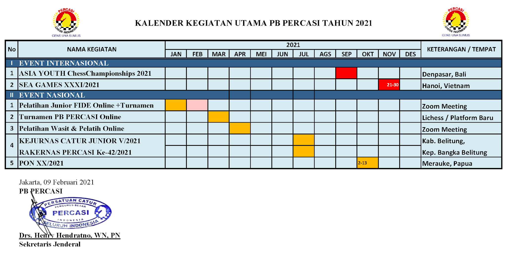

Kalender kegiatan terbaru
Kalender kegiatan utama PB PERCASI Tahun 2021 bisa digunakan sebagai pedoman Pengurus Provinsi PERCASI se Indonesia menyesuaikan dengan program di daerah khususnya pelaksanaan KEJURPROV dan PELATDA PON, dengan catatan tetap mengikuti protokol kesehatan yang diberlakukan Pemerintah di daerah masing-masing. Gens Una Sumus.
FINAL GRAND PRIX SCUA 2008 : PERTARUNGAN PARA JUARA JUNIOR INDONESIA
Pada hari pertama, Jumat 28 November 2008, belum terlihat nama-nama yang memiliki prospek cerah. Pada hari ke-dua di babak ke-3, mulai terlihat ada 2 pemain yang mengumpulkan full-point, yaitu Virda Rizka Aulia dan Nyimas Sonya. Keduanya berhadapan di meja 1. Akhirnya Virda yang memegang buah putih berhasil menghempaskan Nyimas Sonya. Di babak ke-4, Angela Tri Kurnia menyodok ke papan atas dan menantang Virda. Ternyata Virda tetap kokoh mempertahankan posisinya sebagai pimpinan peringkat sementara, dan Angela digusurnya balik ke papan tengah.
Di babak ke-5 yang dimulai pukul 09.00 WIB hari Minggu tanggal 30 November 2008, Virda Rizka Aulia yang telah mengumpulkan 4 poin, akan dijajal kemampuannya oleh pesaing terdekatnya yaitu Inti Intishar yang telah mengumpulkan 3 poin. Agaknya hari ini Virda tidak segarang kemarin-kemarin, dia memilih mengamankan peringkatnya dengan bermain draw. Sementara di meja 2 Nyimas Sonya yang sudah kembali bangkit dan mengumpulkan 3 angka, ternyata digebuk lagi oleh Nuansa Emeralda yang mengantungi 2½ angka.
Di babak ke-6 atau babak terakhir, tinggal Nuansa Emeralda dengan poin 3½ yang akan menantang Virda Rizka yang telah mengumpulkan poin 4½. Memegang buah hitam, Virda tidak mau mengambil resiko, dan hasil daw pun disepakati keduanya. Dengan hasil draw sudah jelas Virda Rizka akan tampil sebagai juara, sementara Nuansa juga tidak terlalu tergelincir ke peringkat bawah. Di meja 2 Inti Intishar dengan poin 3½ berhadapan dengan Maria Shanti Swastika yang tertatih-tatih mengumpulkan poin 3, dan pertandingan keduanya juga draw. Di meja 3 Julisa Pasaribu yang juga tertatih-tatih mengumpulkan poin 3, harus mengakui keunggulan Nyimas Sonya yang sama-sama poin 3. Julisa terpelanting, sedangkan Nyimas Sonya bertahan di peringkat atas. Di meja 4 Angela Tri Kurnia dengan poin 2½ tanpa ampun membekuk Francisca Fortunata yang sudah bersusah-payah mengumpulkan poin 3. Angela menyusup ke sepuluh besar, sementara Francisca berdebar-debar menunggu hasil ranking akhir...
Ranking Akhir Final Grand Prix SCUA 2008 – Kelompok Putri
Rank. Name Score WP/Bucholz SB PS (Hadiah)
1. Virda Rizka Aulia 5.0 19.5 15.50 19.5 (Rp 1.000.000)
2. Inti Intishar 4.0 21.0 13.50 15.0 (Rp 750.000)
3. Nyimas Sonya NMS 4.0 19.5 10.50 15.0 (Rp 500.000)
4. Nuansa Emeralda 4.0 18.0 10.50 12.0 (Rp 300.000)
5. Angela Tri Kurnia Sari MPW 3.5 22.5 12.50 13.5 (Rp 300.000)
6. Maria Shanti Swastika 3.5 18.0 9.50 12.0 (Rp 200.000)
7. Francisca Fortunata H. 3.0 20.0 8.75 12.0 (Rp 200.000)
8. Lintang Wulandari 3.0 16.0 4.50 11.0 (Rp 200.000)
9. Julisa Pasaribu 3.0 22.0 10.25 10.0 (Rp 200.000)
10. Eka Yunita Dian P. 3.0 16.0 5.00 10.0 (Rp 200.000)
11. Angela N. Renggalis 2.0 13.0 2.50 5.0
12. Puti Megitasari 1.0 14.5 1.75 5.0
13. Ameliasih MPW 1.0 15.0 2.75 4.0
14. Nyimas Shieta PCMS 1.0 17.0 1.50 2.0